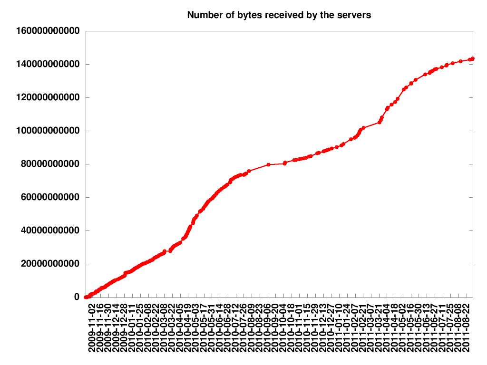

We wrote a paper about the implementation details and the math behind breaking ECC2K-130. A totally anonymous version can be found here. You can also follow us on twitter as ECCchallenge.
What is this all about? Certicom has published a series of challenges to further the understanding of the Elliptic Curve Discrete Logarithm Problem (ECDLP). The challenge is described on their website, a pdf file with the challenge details is also available as is a list of curve parameters.
This webpage describes progress in breaking the Certicom challenge ECC2K-130. We have implemented the attack on CPUs, GPUs, Cells, and FPGAs; this page reports the number of distinguished points found so far (usually with a day or two delay). Finding a distinguished point takes on average 225.27 iterations; we estimate a total computation time of 260.9 iterations (corresponding to finding about 235.63 distinguished points).
We are still in the phase where we see new clusters join. The
following graph

Here is a small glimpse of how beautiful the whole thing will look once it's finished:
|
|
| A rho within a random walk on 1024 elements. | Short walks ending in distinguished points (big circles); the blue and the orange path have found the same distinguished point. |
The following table shows the speeds of our latest implementations:
| Platform | Single-core cycles per iteration | Iterations per second | Number of copies of this platform to carry out 2^60.9 iterations in one year |
|---|---|---|---|
| Opteron 875 (2 cores, 2.210GHz) | 1058 | 4.17 million | 16360 |
| Phenom II X4 905e (4 cores, 2.508GHz) | 596 | 16.83 million | 4054 |
| Core 2 Extreme Q6850 (4 cores, 2.997GHz) | 534 | 22.45 million | 3039 |
| PlayStation 3 (Cell CPU with 6 accessible SPEs, 1 PPE) | 749 (SPE) | 27.67 million | 2466 |
| Spartan-3 XC3S5000-4FG676 FPGA | N/A | 33.67 million | 2026 |
| GTX 295 video card (60 cores, 1.242GHz, in 2 GT200b GPUs) | 1379 (new!) | 54.03 million | 1263 |
| 16 mm^2 ASIC, 90nm process | N/A | estimated 800 million | 85 |